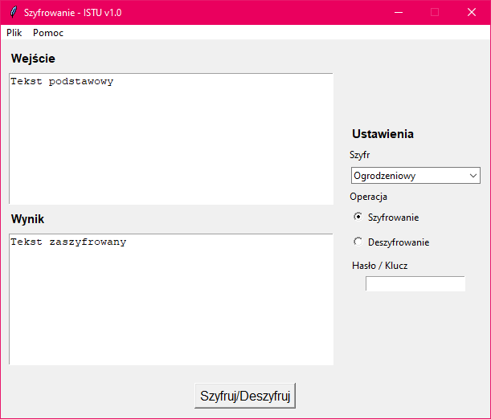

Aplikacja pozwalająca na szyfrowanie i deszyfrowanie wybranego ciągu znaków przy pomocy szyfru ogrodzeniowego (zygzak) lub szyfru transpozycji kolumnowej.
Przygotowana została na potrzeby przedmiotu "Informatyczne Systemy Tolerujące Uszkodzenia".

Aby przeprowadzić operację szyfrowania należy do pola wejścia wprowadzić żądany ciąg znaków do szyfrowania.
Następnie w sekcji ustawień należy wybrać żądany szyfr za pomocą listy rozwijanej, żądaną operację (szyfrowanie) i podać wybrany klucz.
W przypadku szyfru ogrodzeniowego kluczem jest liczba całkowita, której wartość nie może być większa niż długość wprowadzonej wiadomości.
Brak wprowadzonej wiadomości lub klucza spowoduje wyświetlenie okna błędu z informacją, które pole należy uzupełnić
Aby przeprowadzić deszyfrowanie postępujemy analogicznie do szyfrowania tym razem wybierając z listy operacji opcję "Deszyfrowanie".